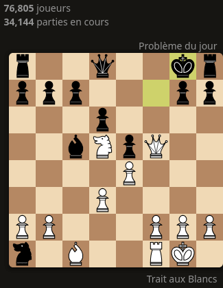

Bienvenue au Club d'échecs de St Étienne !
Le Club d’échecs du Collège et Lycée St Étienne accueille les élèves souhaitant découvrir ou approfondir leur connaissance du jeu d’échecs. Grâce à notre équipe de professeurs passionnés et à du matériel pédagogique adapté (échiquiers physiques et accès à des ordinateurs), nous offrons une expérience complète, aussi bien en présentiel qu’en ligne via Lichess.org.
Horaires et Lieux
| Jour | Heure | Niveau scolaire | Salle | Responsable |
|---|---|---|---|---|
| Mardi | 12h55 - 13h50 | Collège | A305 | Claude Daguet |
| Jeudi | 16h00 - 16h55 | Collège | C400 | Laurent Deviers |
| Jeudi | 16h00 - 17h50 | Lycée | C400 | Denis Vincent |
Événements et Compétitions
Le Club participe au championnat de France UNSS d’échecs en ligne cette année. Voici les dates à retenir :
- 27 novembre : Premier tour du championnat UNSS.
- 29 janvier : Deuxième tour du championnat UNSS.
- 2 avril : Troisième tour du championnat UNSS.
Problème du jour
Notre équipe
Denis Vincent : Joueur expérimenté et créateur de la chaîne YouTube ChessTrainer2000.
Laurent Deviers : Professeur de technologie et passionné d’échecs.
Claude Daguet : Professeur de collège et responsable des cours d’échecs pour les collégiens.
Galerie
Découvrez les moments forts du club d’échecs à travers ces photos prises lors de nos sessions et compétitions.